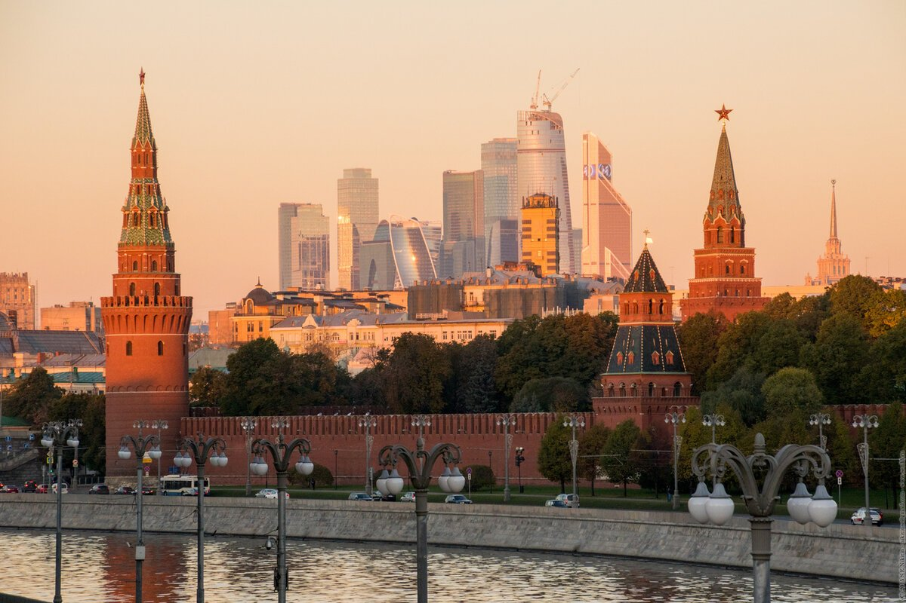

Гришко Олег Витальевич
Дата рождения: 17 ноября 1986 года
Родился в городе Киев, УССР. Ранее детство провел в пгт Подгородняя, Николаевская область, УССР. Школьные годы прошли в городе Новоазовск, Донецкая область, Украина. Студенческие годы прошли в городе Бердянск, Запорожская область, Украина. Там же первые годы трудовой деятельности. Затем переехал в город Москва, Россия. Жил в Москве до сентября 2022 года. Затем вернулся в город детства Новоазовск, ДНР, Россия.

Учеба
- ООШ № 2, г. Новоазовск
- БУМиБ, факультет ИСТ, г. Бердянск
- GeekBrains, Frontend-Разработчик. Специалист
Трудовая деятельность
- ПАО "БПТС", г. Бердянск. Инженер-программист
- ПАО "БПТС", г. Бердянск. Ведущий программист
- ПАО "БПТС", г. Бердянск. И.о. начальника АСУП
- ООО "АгроСил", г. Москва. Системный администратор
- ООО "АгроСил", г. Москва. Бухгалтер
- МУП "УНИВЕРСАЛ-НОВСЕРВИС", г. Новоазовск. Программист